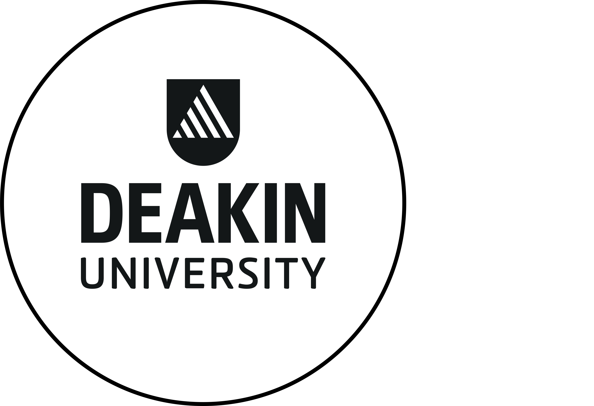

As students, this unit introduces key industry tools, professional practices, and teamwork skills required in IT environments. It focuses on how technologies integrate, while also developing ethical awareness, communication skills, and problem-solving abilities. This allows students to clearly understand expectations and prepares them for real-world IT careers.
To successfully pass this unit, students must complete all required tasks and demonstrate consistent engagement throughout the trimester.
For more details about enrolment and fees, visit the official Deakin page:
Current students - enrolment and fees
| Year: | 2023 unit information |
| Enrolment modes: | Trimester 1: Burwood (Melbourne), Geelong, Cloud (online) |
| Credit point(s): | 1 |
| Unit Chair: | Trimester 1: Azadeh Ghari Neiat |
| Scheduled Learning Activities: | 1 x 3 hour active class per week, weekly drop in support. |